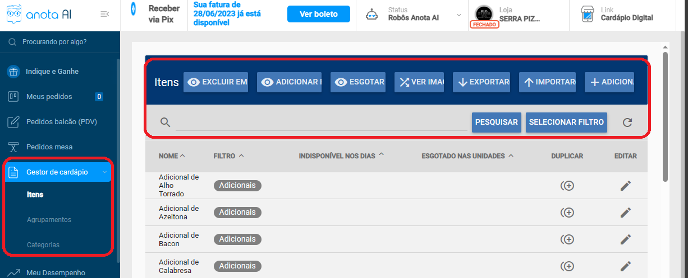
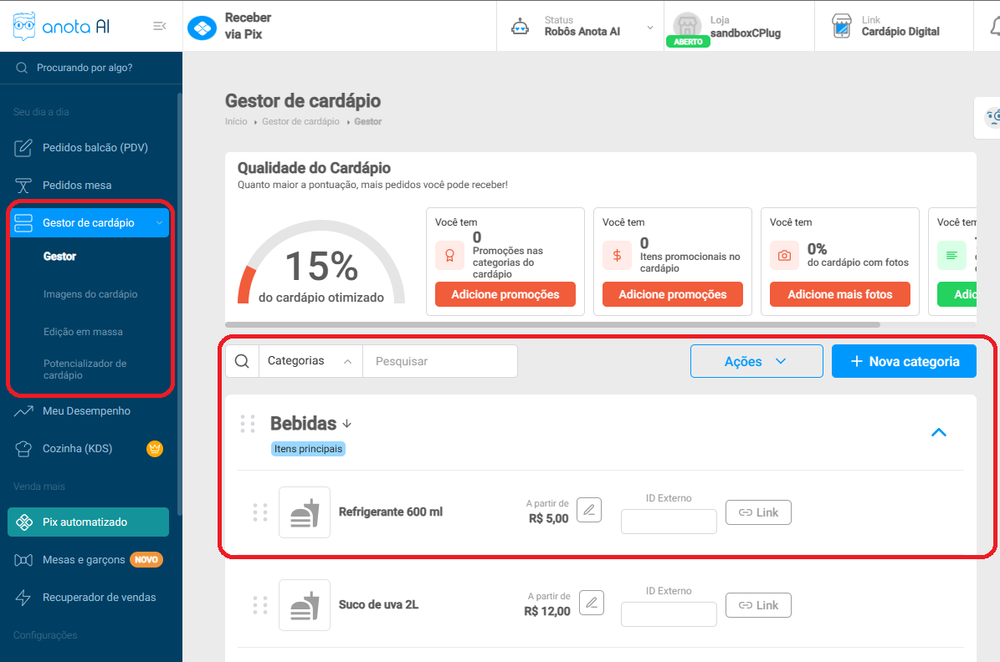

COMO INTEGRAR COM ANOTA AÍ DELIVERY
Anota aí Delivery é uma plataforma de delivery próprio, similar ao Delivery Direto.
Integração disponível no PDV 2 versão 2.9.6
Necessário contratar módulo Delivery e módulo HUB (antiga integração delivery).
Integração Beta.
Não há possibilidade de exportar cardápio.
Possibilidade de receber pedidos automaticamente.
Possibilidade de definir "vendedor" padrão com nome da integração.
Necessário enviar "token da sua loja" para matheus.teixeira@cplug.com.br liberar a integração e gerar o token a ser inserido no ERP. SLA: 24 horas úteis.
Observação importante:
É importante se certificar que nosso cliente utilize a ultima versão do cardápio digital na plataforma ANOTA AÍ. Como não temos como verificar a numeração da versão correta, abaixo colocaremos um print do gestor de cardápios na versão anterior (que não recomendamos utilizar a integração) e na sequência um print do gestor de cardápios na versão atualizada e recomendada para integração.
Versão desatualizada - Não recomendada a integração

Versão atualizada - Recomendada a integração
